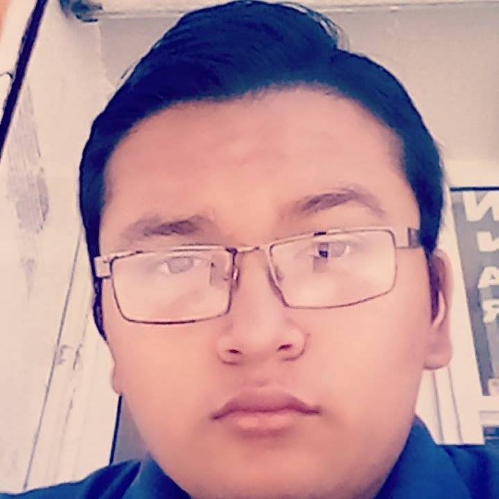

Amistad es...

Poema a la amistad:
Amigos Amigos... siempre seremos amigos para contar alegrías y tristezas, una a una
y así tendremos como testigos al sol, al viento, a la noche, o a la luna. Viajaremos por mundos distantes
para buscar con todo el empeño ¡ Seremos como el caminante que cabalga buscando su sueño!.
Amigos siempre sobre todas las cosas como van unidos espinas y rosas sin que importe nunca distancia ni tiempo
tú serás la lluvia... yo tal vez el viento.Yo así seguiré como lo hacen pocos, buscando en la vida mis sueños locos
y si algo pasara ¡Escucha lo que te digo por todos los tiempos, yo seré tu amigo!
"La amistad es como una planta que crece con lentitud y tiene que aguantar las sacudidas antes de merecer su nombre"
Hoy quiero agradecer a mis amigos todos los bellos momentos que me han regalado,el tiempo que pasaron conmigo y las locuras de las que hemos sido complices
- Mis amigos:
- Karla:My friend, única, especial sabes que le quiero mucho y que siempre podras confiar, todas nuestras lokuras son tan asdfghjk! siempre ha estado a mi lado apesar de todo espero q sigamos aciendo lokuras xD
Ya 2 años de hermosos recuerdos juntas
- Emmanuel:Tu eres una gran persona y se que puedo confiar en ti como tu puedes confiar en mi Eres genial y aunque solo le conoci un año fue suficiente para qererle (ya deja el vicio de los videojuegos Cx )
Cada momento lo hace alegre
- Luisa (Joane Angelina Germanotta) Quien diria que una bufanda nos uniria y nos aria grandes amigas apesar de los problemas la quiero y extraño mucho y SMPJ cuenta Conmigo SiempreATuLado AunqueNoTePuedaVer Todos los momentos con ella son Inolvidables y siempre estara en mi corazon My Hermana GaGa My dope xD
- Pamela:Estar con ella 3 años fue una de las mejores cosas que me pudo pasar siempre ha sido comprensiva y unida sobre todo una gran amiga a la que qiero mucho y eh llegado a estimar Emoticono colonthree nunca olvides que estare apoyandote siempre (mas xq es la socia de mi padre2 xD)
- Dulce (estrellita) :Fue la primer amiga que tuve en la secundaria y recordar los momentos q pase con ella es maravilloso jamas olvidare que el profe Ian nos saco 8 por estar riendo en la exposicion ni me olvidare de ti porque ocupas un lugar muy especial en mi
Corazón
- Yoselin:Mi madre(o eso dijeron) ja desde el principio tuvimos cosas en comun como que nos gusta Harry Potter y La Saga Crepusculo hahaha, una de mis mejores amigas me encanta que es única sabes lo que qiere y dice lo que piensa Te quiero mucho madre xD siempre cuenta conmigo para lo que necesites (incluso esconder un cadaver )
- Diego (mi cocolito) :Mi abuelito al que qiero tanto lo conoci en 1ero pero fué asta 3ero q pudimos convivir un poco mas me alegra haberlo conocido mas, con el me la pase increible sobre todo en la clase d español y en E.Fisica ha sido un gran amigo para mi y siempre le recuerdo con cariño
- Gaytan:le conocí en el ultimo año de la secu pero eso no impidio q nos hicieramos amigos y q llegara a ser mi tío ese año fue increble y me gustaba mucho q nos abrazaramos te quiero mucho y ojala no me reemplase como su sobrina
- Alejandro:My ermanito my amigo my confidente jejeje Eres una persona muy especial para mi, mi #Cotizado favorito ja Cada momento contigo me la pase muy bien siempre sera mi hermanito sexy xD personas que llegan de repente y ocupan un lugar muy especial en nosotros, ojala salieramos pronto y prometo ir a visitarte a ti y no a tu baño Dx
- Emily: La persona que estuvo conmigo desde la primaria, la conosco desde ace más de 9 años y siempre ha demostrado ser una gran amiga, se que puedo contar con ella siempre que lo necesite, la quiero demasiado y vamos por más años de amistad
- Jazmin: nunca me importo q fuera más grande que yo y desde el principio la ví como una hermana, es una gran amiga, con ella siempre eh estado feliz y la quiero mucho, Me ha aconsejado y ha estado conmigo en momentos dificiles SMPJ mi hermana, mi amiga, la persona en quien confio.
Los momentos que pase con ella son de mis recuerdos mas bonitos y especiales siempre contara conmigo sin importar la distancia o los problemas siempre seré su dama de honor eeeh!
- Hugo:Mi padre número 2 ese buen amigo Cx alguien especial para mi, la persona a la que he llegado a querer mucho, que cuento y cuenta conmigo para todo, ha llegado a ocupar un lugar muy especial en mi corazón, muchas aventuras juntos, lagrimas sonrisas y lo que venga.
- Vaqero (Armando) :Nunca falta el amigo bien chantajista pero que tambien es buen amigo y te apoya a pesar de todo
- Ivone:Fue una gran amiga aunque se fue terminando 1er año de secundaria siempre la he recordado
- Valery, una chica superlinda que ha estado conmigo desde que empezo esta aventura en el CECyT 14,me ha aconsejado y me ha apoyado en muchas cosas 7u7 es una gran amiga y aunque quisiera que este conmigo hasta terminar el nivel medio superior espero que en 2 años ambas estemos con nuestros pirruetes de graduación emocionadas por concluir esta etapa.
- Alejandro (MAADU) :Mi mejor amigo amiga del universo, siempre ha sabido que decir, ha tenido la palabra adecuada en el momento exacto, me ha ayudado a superar etapas y a iniciar nuevas sin miedo, si algo tengo que decirle es ¡¡¡Gracias por todo!!! Conocerte ha sido algo muy especial para mi, y aunque ya no estemos tan juntos como antes siempre seras mi MAADU esa Persona especial que dejo su "granito de arena en mi"
- Diego (Fogonazzo) : mi compañero de música, talvez contigo no tenga demasiados recuerdos pero eres alguien importante para mi, haha te conoci un viernes y me acompañaste a las becas haha. Y desde ahi empezó todo, gracias por las canciones, aunque no te aprendas las que te pido u.u te quiero.
- Yahir: Hermano , Mi hombre de traje, Mi corazón de bombón que late,
Eres la persona que mas me ha dejado, te quiero y aprecio mucho siempre me has escuchado y ayudado, espero que superes el trauma que te deje con tu lugar xc, pero viéndolo por el lado amable, si no te lo hubiera quitado talvez ni nos hubiéramos hablado ni seriamos tan unidos, perdona a mi memoria de corto plazo por olvidar todo, "Miss XV en la Erro con el Ñero" los momentos a tu lado los guardo siempre en mi corazón SMPJ.
- JoséLuis(Porro) :Niño JoséLuis a el lo quiero mucho, recuerdo esos dias afuera de cine, terapeandonos y deprimiendonos con las canciones, las burlas también , es buen amigo y se que le ira bien en todo lo que se proponga.
- Mau:
Es una gran persona, mi padre Procopio, recuerdo cuando le empece a hablar y sonrió Emoticono smile hahahah siempre me saca una sonrisa, y su frase "oye, tranquila vieja" es un amigo unico
"voy a captura nuestra historia en tan sólo un segundo"
Aunque existan problemas siempre podran contar conmigo
"Esto no es un Adios Sino un Hasta Pronto"
Para mí la amistad es compartir buenos momentos puedes tener amistad con cualquier persona puede ser de 5 minutos o 3 días pero la verdadera amistad es aquella que dura para siempre que no importa que nunca va a acabarse si no que con cada pelea grande o pequeña siempre podrá formarse y cada vez con más fuerza
- Mis amigos:
- Amara (karnalita)
Esta tipa es una persona súper especia, la conozco desde el kínder y hasta ahora nada ni nadie nos ha podido separar espero estar a su lado por muchos años más. Su forma de ser de pensar y de actuar ha sido lo que la ha llevado a ser mi mejor amiga
- Nayely (tributoinfinitocolateralcazadoradesombrasdivergentereal)
Esta señorita es de esas típicas que podemos hablar en nuestro propio idioma y entendernos a la perfección pero nadie más lo hará. Una de esas pocas personas que me ha apoyado pase lo que pase y que ha estado a mi lado por mucho tiempo. Sabe todo de mí, mis desgracias, penas, miedos, secretos etc... En fin una persona sin igual
- Tristán
Este loco es súper genial, si estas a su lado por 3 minutos es suficiente para que te haga morir de risa, es muy ocurrente y súper especial no lo cambiaría por nada ni por nadie ya que lo quiero mucho y espero que me siga hablando y no me olvide jeje y a pesar de que en el pasado nos odiábamos mutuamente el tiempo logro que se formara una gran amistad
- Guido (pandita)
Este tipo es súper genial porque es súper paciente soporta mis locuras y da los mejores consejos del mundo es mi guarda espaldas y confidente y a cambio yo soy su psicóloga y él es el mío fue cuestión de un año para formar una gran amistad y espero que no se termine je
- Juan (Juanetho)
Este tipo comprende mis locuras y está igual o hasta más loco que yo siempre me la paso súper genial con él y aunque ya casi no lo veo nuestra amistad no acabara nunca. La forma en la que lo conocí fue súper rara pero gracias a eso es que tengo a mi lado a un súper amigo y hermano
- Salma
A ella no la conozco de mucho tiempo pero actualmente es mi mejor amiga, somos muy diferentes pero por alguna extraña razón nos llevamos muy bien y eso me encanta, antes asíamos más locuras que ahora pero aunque sé que no todo dura para siempre quisiera que esta amistad no terminara nunca, sé que ella siempre estará allí para echarme porritas (aunque no me quiera cx)
- Diego (Fogonazo)
Mmmm que diré de este tipo, bueno aunque es medio bipolar es una persona súper genial con muy buena actitud realmente ya no recuerdo de cómo lo conocí o como le empeze a hablar pero sea como sea me alegra mucho el haberlo conocido y aunque a veces me saca de quicio creo que es súper genial el haberle conocido, espero que esta amistad no acabe nunca o al menos hasta 5to semestre cx con eso me conformo
- Mauro (Mau)
Él es un tipo súper genial siempre estando de buen humor o al menos eso hace aparentar de hecho es muy raro verle triste o enojado, yo antes pensaba que era payaso muy callado y antisocial pero con el tiempo le haber y descubrí lo buena persona que es y me alegra que le hablara a diego creo que eso fue lo que ocasionó que mau fuera más social y eso me alegra al principio envidiaba (envidia de la buena) como se llevaban súper bien creo que eso fue lo que me hizo acercarme a ambos

amistad:es el vinculo afectivo que se tiene con otras personas ajenas a tu familia
Para mi la amistad va desde estar en algun momento duro con otra persona hasta echar relajo con alguien que siempre ha estado a tu lado en las buenas y en las mala por eso yo le agradesco la vida por darme a los maravillosos amigos que tengo aunque yo algunas veces les fallo ellos siempre estn ahi conmigo apoyandome en todo lo que ellos puedan
- Mis amigos:
- MOISES:Este tipo siempre esta conmigo aun en los momentos dificies y lo estimo
- VALERI:A esta persona la quiero mucho no se como empezo esto pero le agradesco por ser mi amiga
- SALMA:La quiero porque comparte comigo el taller de musica es mi amiga musical y ojala no se acabe ese lazo
- ANNA:Esta persona es muy especial en mi vida y lo uico que puedo decir es que la quiero y no me arrepiento de haberla conocido
por eso esta cancion es una muy especial para mi ya que me recuerda los grandes amigos que tengo: